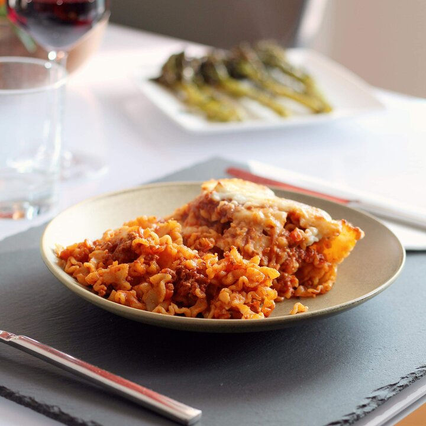

Skillet Lasagna

Description
This no-bake skillet lasagna is made right on your stovetop and is a fast and easy alternative to store-bought hamburger mixes!
Ingredients
- 0.5 pound ground beef
- 14 ounce jar spaghetti sauce
- 14 ounce can diced tomatoes
- Half onion, chopped
- 1 clove garlic, minces
- 12 teaspoons dried basil
- 2 teaspoons dried oregano
- 1 teaspoon salt
- 1 teaspoon black pepper
- 2 cups dried mafalda noodles
- 1 cup shredded mozzarella cheese
Steps
Step 1
- Heat a large skillet over medium-high heat. Cook and stir beef in the hot skillet until browned and crumbly, 5 to 7 minutes. Drain and discard grease. Add spaghetti sauce, tomatoes, onion, garlic, basil, oregano, salt, and pepper. Cook over low heat until sauce is hot, about 15 minutes.
Step 2
- Meanwhile, fill a large pot with lightly salted water and bring to a rolling boil. Cook mafalda noodles at a boil until tender yet firm to the bite, about 8 minutes. Drain.
Step 3
- Add cooked and drained noodles to the sauce and stir until completely coated. Sprinkle mozzarella cheese on top.
Step 4
- Set an oven rack about 6 inches from the heat source and preheat the oven's broiler.
Step 5
- Place skillet under the hot broil and cook until cheese is golden and bubbly, 3 to 5 minutes.